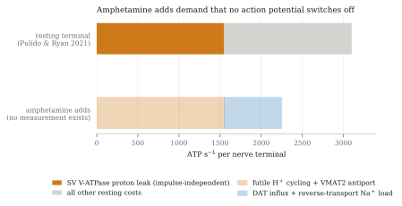
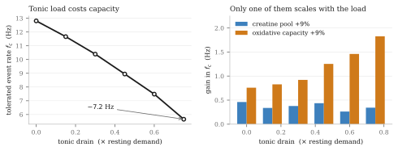
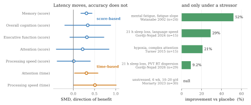

The case for creatine supporting neuronal firing capacity gets weaker on amphetamine than it is on methylphenidate, not stronger. That is the opposite of what the usual reasoning predicts. The usual reasoning runs: amphetamine drives dopamine terminals harder, harder work costs more ATP, creatine expands the phosphocreatine buffer, therefore creatine should help more. Every step is individually defensible and the conclusion does not follow, because the load amphetamine adds is the wrong kind of load for a buffer to absorb. Two other routes survive the argument intact, and one of them is strengthened by it.
Section oneWhy the stimulant class changes the question
Methylphenidate is a pure dopamine- and norepinephrine-transporter blocker. It is not itself translocated, it carries no cations across the membrane, it does not enter synaptic vesicles, and it has no weak-base action. Amphetamine is a substrate at both the dopamine transporter and the vesicular monoamine transporter, and it is a lipophilic weak base. Every energetic cost in this piece is amphetamine-only.
That matters because almost everything creatine is proposed to do in the brain runs through cellular energetics. If two stimulants load a dopamine terminal in structurally different ways, a claim about creatine that holds for one of them does not automatically transfer. I have not seen that distinction drawn anywhere in the creatine literature, which is part of why it is worth drawing.
Section twoTwo questions hide inside "firing rate"
Amphetamine dissociates the two things the phrase usually bundles together. Bunney and Aghajanian (1978) found that relatively low intravenous doses of d-amphetamine caused nigral dopamine cells to cease firing entirely. In animals with the striatonigral pathway lesioned, a five-fold higher dose was needed for 50% inhibition and even high doses failed to abolish firing, so the suppression is partly a GABAergic feedback loop and partly D2 autoreceptor mediated. Shi and colleagues (2000) reproduced the inhibition at 1 to 2 mg/kg intravenously in rats, against a baseline of roughly 44 to 48 spikes per 10 seconds.
Terminal dopamine output, meanwhile, rises, and it rises without action potentials. Sulzer and colleagues (1995) showed that injecting amphetamine directly into the cytoplasm of a dopamine neuron produces nomifensine-sensitive release, so reverse transport through the transporter needs no spike at all; quantal dopamine per vesicle fell by more than half in PC12 cells.
So somatodendritic spiking falls while terminal output rises. If the thing you want creatine to support is spike rate, the drug is actively suppressing it. If the thing you want supported is sustained transmitter output under load, that output is now being produced by a mechanism that bypasses the vesicle cycle, which is the ATP cost a buffer would classically protect.
The exception, which is not small
Shi and colleagues found a second effect hidden underneath the first. Under D2 blockade with raclopride, an opposite excitatory action of amphetamine is unmasked: firing rose from 50.8 ± 4.0 to 62.3 ± 3.4 spikes per 10 s and burst firing from 9.7 ± 3.1 to 27.3 ± 4.2 spikes in bursts, across 22 cells. In non-anaesthetised animals the excitation was larger, 44.8 ± 6.1 to 76.2 ± 8.7. It survived combined D1 and D2 blockade, so it is not dopamine-receptor mediated, and prazosin abolished the burst increase, making it α1-adrenergic.
The clinically relevant reading is that anyone taking amphetamine together with an antipsychotic or a D2 partial agonist should, on this data, show genuinely increased dopamine-neuron firing and burst firing rather than the suppression everyone else gets. That combination is common and, as far as I can find, has not been tested directly. It is an inference from a raclopride experiment to a partial agonist, and partial agonism is not blockade, so I would hold it loosely. But it is the one condition in which "amphetamine raises firing rate" is probably true, and it therefore restores exactly the phasic load a buffer is built for.
Section threeWhat amphetamine costs a terminal
Three costs are structurally unique to the releaser.
Transporter translocation is electrogenic and is not free. Sonders and colleagues (1997) voltage-clamped the human dopamine transporter and measured charge movement during substrate translocation greater than predicted for a fixed two-sodium, one-chloride, one-dopamine stoichiometry, implying an uncoupled cation conductance on top of the coupled flux. Erreger and colleagues (2008) found transporter turnover identical for amphetamine and dopamine within experimental error, with 10 µM amphetamine producing a 6.5 ± 0.5 pA peak current decaying to about a quarter of peak at steady state. Every sodium that enters has to be pumped back out.
Vesicular antiport is a direct proton debit. The vesicular monoamine transporter exports two protons for every cationic monoamine it imports, and the gradient that drives it is generated by the vesicular ATPase. Freyberg and colleagues (2016) measured a 0.4 pH unit alkalinisation from a lumenal baseline of 5.8 in Drosophila dopamine neurons, and amphetamine destained a fluorescent vesicular marker with a half-time of 66.6 ± 17.1 s.
Weak-base partitioning is a genuine futile cycle. Neutral amphetamine diffuses across the vesicle membrane, is protonated in the acidic lumen, and the neutral species re-equilibrates. Protons are consumed and no transport work is done.
The context that makes these interesting is Pulido and Ryan's (2021) finding that a resting nerve terminal consumes roughly 3100 ATP per second, of which about half is vesicular ATPase proton leak. Half the resting bill of a synapse is already spent holding a proton gradient, and amphetamine attacks that gradient from two directions at once.

The arithmetic that would turn this into a number has not been published, and the one I can do myself is only a floor. If each amphetamine influx event carries two sodium ions inward and the sodium pump extrudes three per ATP, the floor is about 0.67 ATP per molecule taken up. Whether the efflux step adds to that bill or partly relieves it depends on which model of reverse transport is assumed, which is one reason the number has never been published. The uncoupled conductance and the channel-mode bursts reported by Kahlig and colleagues (2005) could make the true figure several times higher. Robertson, Matthies and Galli's review of reverse transport (2009) contains no treatment of sodium-pump compensation or metabolic demand at all. The claim that amphetamine is bioenergetically expensive is a mechanistic inference, not a measured quantity, and it should be stated that way.
The counterweight, which is real
Graves and colleagues (2020) showed that monoamine oxidase sits on the outer mitochondrial membrane and that its metabolism of dopamine does not raise cytosolic hydrogen peroxide but shuttles electrons into the intermembrane space, activating the electron transport chain. Methamphetamine at 10 µM and L-DOPA at 100 µM increased mitochondrial thiol oxidation and ATP synthesis, and blocking either monoamine oxidase or ATP synthase impaired repeated phasic release.
So raising cytosolic dopamine is not unambiguously a net energetic debit. Any model claiming that amphetamine creates an ATP deficit has to get past this result, and the honest position is that supply and demand both move.
Section fourWhat has been measured, and at what dose
One group, at UNESC in Brazil, has measured brain energy enzymes in a d-amphetamine mania model, typically 2 mg/kg intraperitoneally in male Wistar rats for 14 days. Their results are the only direct evidence that bears on this question, and they dissociate the two stimulant classes on exactly one measure.
| Measure | d-Amphetamine | Methylphenidate |
|---|---|---|
| Brain creatine kinase | Decreased in hippocampus, striatum and cortex (Streck 2008; Moretti 2011) | Increased in prefrontal cortex, hippocampus, striatum and cerebral cortex at 10 mg/kg (Scaini 2008) |
| Respiratory complexes I to IV | Decreased, after chronic dosing and after a single injection (Valvassori 2010; Feier 2012) | Decreased in adult rats, increased in young rats (Fagundes 2010; Fagundes 2007) |
| Krebs cycle enzymes | Decreased in every region examined (Valvassori 2013) | Not reported |
Two details are worth pulling out. Feier and colleagues found complexes I to IV inhibited after a single 2 mg/kg injection and not in a dose-dependent way, so this is not a chronic-exposure phenomenon. And the methylphenidate contrast is narrower than it looks: both drugs inhibit the respiratory chain in adult rats, so only the creatine kinase direction actually separates them, and for methylphenidate even that is age-dependent.
The dose objection does not work
The usual dismissal of rodent mania models is that they use absurd doses. On body-surface-area scaling that is wrong. Rat 2 mg/kg divided by the standard conversion factor of 6.2 gives about 0.32 mg/kg in a human, roughly 23 mg of d-amphetamine base for a 70 kg adult. A 70 mg dose of lisdexamfetamine delivers approximately 21 mg of d-amphetamine base. These are the same dose.
Where the extrapolation actually breaks is elsewhere, and being precise about it matters more than the mg/kg point. A 2 mg/kg intraperitoneal bolus produces a near-instantaneous peak, while lisdexamfetamine's entire design purpose is rate-limited enzymatic hydrolysis in red blood cells, giving a blunted peak and a long flat curve; the model's readouts, hyperlocomotion and stereotypy, are peak-concentration phenomena, and matching area under the curve does not match peak. The animals are in frank stereotypy when the enzymes are measured. The series reports direction and p-values rather than effect sizes, so the magnitude is genuinely unknown from the published record. It is one laboratory, six to fifteen animals per group, and I could find no independent replication of the creatine kinase finding. And no study of any kind has measured creatine kinase, phosphocreatine, ATP or respiratory complexes after lisdexamfetamine specifically.
Against reassurance, Ricaurte and colleagues (2005) gave adult baboons oral amphetamine twice daily for four weeks, reaching mean plasma concentrations of 168 ± 25 ng/ml, which the authors state is on the order of levels in patients treated for attention disorders. Two weeks after cessation, striatal dopamine, transporter binding sites and vesicular transporter sites were all significantly reduced. That study measured dopaminergic markers rather than ATP, and Advokat's review (2007) is explicitly inconclusive, with other work showing trophic dendritic growth at therapeutic-mimicking doses. It is enough to stop anyone writing off therapeutic-range amphetamine as bioenergetically inert. For balance, the only direct ATP measurement at human-relevant concentrations is null: Schmidt and colleagues (2010) found no significant effect on ATP content in a human neuronal line across and above the therapeutic range, with amphetamine enhancing cell survival at lower concentrations.
Section fiveA tonic load is the wrong shape for a buffer
The model is small on purpose. A near-equilibrium creatine kinase reaction, Michaelis-Menten oxidative ATP synthesis, and a demand train whose event rate ramps upward. Three things distinguish it from the version I built for methylphenidate: oxidative flux now activates with a first-order lag of about two seconds rather than instantaneously, demand is split explicitly into a phasic term delivered as discrete quanta at the event rate and a tonic term that runs continuously, and a new parameter adds firing-independent drain on top of housekeeping.
Anchors: total adenine nucleotide 2.6 mM, which matches the 2.5 to 2.7 mM presynaptic ATP that Straub and colleagues (2025) measured directly with genetically encoded sensors at physiological temperature; total creatine 9.0 mM; a creatine kinase equilibrium constant of 166; and a free-ADP tolerance threshold of 80 µM. The tonic drain is expressed in multiples of resting demand rather than in absolute units, because the absolute figure has never been measured and pretending otherwise would be the wrong kind of precision.

The steady-train decomposition makes the mechanism explicit. At a fixed 8 Hz train, a 9% larger creatine pool changes the peak-to-mean ADP excursion by −0.2%, and at high tonic load the sign flips to +1.9%. Over the same range the mean free ADP rises from 38.8 to 86.4 µM, which by itself consumes the entire 41 µM of headroom to threshold. The buffer acts on the excursion. It cannot act on the mean, which in steady state is fixed by the maximum oxidative rate, its half-saturation constant and total demand, and is algebraically independent of how much creatine is present.

The result, stated plainly
A temporal buffer covers the gap between when demand arrives and when supply catches up. Its value therefore scales with the fraction of demand that arrives faster than mitochondria can ramp. Amphetamine's added load is tonic, impulse-independent and sustained. That is precisely the load profile a buffer cannot address, and it simultaneously raises the marginal value of the thing that can.
Two caveats cut the other way and I want them on the record. The model is well mixed, so it cannot represent microcompartmentation, which is exactly where creatine kinase should matter most. And if the α1 excitation of Section two is real under a D2 partial agonist, that adds genuine phasic load, which is the load a buffer does help with. Those two considerations point in the opposite direction from the main result, and their sum is what anyone would actually experience.
Section sixWhere creatine could still act
The mechanism that does not depend on pool size
Dolder and colleagues (2003) ran the experiment that reframes this whole question. They used liver mitochondria from mice engineered to express active mitochondrial creatine kinase, which wild-type liver lacks, with no external adenine nucleotides added. Opening of the mitochondrial permeability transition pore was delayed by creatine and by cyclocreatine, but not by β-guanidinopropionate. The two controls carry the paper: removing magnesium to lower the enzyme's activity abolished the protection, and adding creatine kinase externally to wild-type mitochondria produced no protection at all.
The mechanism is therefore local and microcompartmented. Creatine turned over by correctly localised mitochondrial creatine kinase, functionally coupled to the adenine nucleotide translocase, drives local ADP flux that holds the translocase in the conformation that disfavours pore opening. Creatine without a functioning enzyme in the right place does nothing. Loading the tissue is necessary and not sufficient, and any argument that goes from "creatine supplementation raises tissue creatine" to "therefore neuroprotection" has skipped the step the experiment shows is obligatory.
This route is indifferent to the argument in Section five, because it does not run through pool size or transient buffering. It is also the route that should matter most under an amphetamine load, since the damage mechanism in amphetamine models is calcium dysregulation and mitochondrial depolarisation rather than ATP exhaustion as such. Fortalezas and colleagues (2018) found that in rotenone-treated neurons the calcium dysregulation preceded both the reactive oxygen species rise and the depolarisation, and creatine attenuated it. Cunha and colleagues (2014) found protection against 6-hydroxydopamine in striatal slices that was dependent on PI3K signalling and explicitly not antioxidant: neither creatine nor phosphocreatine blocked the toxin's auto-oxidation.
Why dopamine neurons in particular
The energetic phenotype of these cells is unusual and well characterised. A single reconstructed rat nigrostriatal axon averages about 0.47 m in total length, with a range from 0.14 to 0.78 m (Matsuda 2009). The human equivalent exceeds 4 m and carries more than a million synapses, and the energy cost of propagating an action potential through such an arbor scales with its size by a power law rather than linearly (Pissadaki and Bolam 2013). Pacelli and colleagues (2015) showed that the vulnerable nigral neurons differ from their less vulnerable ventral tegmental neighbours by a higher basal rate of oxidative phosphorylation, a smaller reserve capacity, a higher density of axonal mitochondria and elevated basal oxidative stress, and that reducing the arbor with Semaphorin 7A lowered the basal rate and the vulnerability together. Guzman and colleagues (2010) showed that the L-type calcium entry of autonomous pacemaking itself generates mitochondrial oxidant stress specific to these cells.
Smaller reserve capacity is the load-bearing phrase. It is the parameter the model says dominates, and it is already low in the cell type amphetamine loads hardest.
Whether the creatine kinase system buffers any of this rests, essentially, on one paper. Andres and colleagues (2005) found both cytosolic and mitochondrial creatine kinase expressed at high levels and colocalising with tyrosine-hydroxylase-positive cells in rat embryonic mesencephalic cultures, with 5 mM creatine raising cell density by 35% and restoring it to control levels under MPP+. That is a single organotypic study. A competing account exists: Hobson and colleagues (2022) found 87% of dopamine-neuron protein mass in the striatal axons and seven of nine glycolytic enzymes enriched there, and did not report creatine kinase enrichment at all.
The lesion models work and the human trials failed
Matthews and colleagues (1999) pre-fed mice 1% dietary creatine for two weeks before MPTP. Nigral cell counts were 123 ± 4.1 in controls, 38 ± 10.6 after MPTP, and 118 ± 6.3 with creatine, and the protection was not explained by reduced toxin delivery. That is close to complete rescue.
Then the human trials. NET-PD LS-1 randomised 1741 people with early Parkinson's disease to 10 g/day or placebo for a minimum of five years and was terminated for futility at an interim analysis of 955 participants, with mean summed ranks of 2360 on placebo against 2414 on creatine, p = 0.45, numerically favouring placebo (Kieburtz 2015). CREST-E randomised 553 people with Huntington's disease to up to 40 g/day and was halted for futility, with functional capacity declining 0.82 points per year on creatine against 0.70 on placebo, again favouring placebo (Hersch 2017).
Two large, long, adequately dosed trials in two diseases, both stopped for futility, both with point estimates on the wrong side. That is not underpowering and it is not a systemic dosing failure. The cellular mechanism remains well supported while the clinical claim is falsified at the endpoint, and those are compatible. The most likely reconciliation is delivery: oral creatine crosses the blood-brain barrier through a saturable transporter, muscle loading is not nigral loading, and no LS-1 participant had brain creatine measured. After that, in descending order: acute complex-I poisoning is not idiopathic Parkinson's disease; Matthews pre-fed creatine before the lesion while LS-1 enrolled people already up to five years past diagnosis; and by Dolder's result, oxidative damage to the mitochondrial creatine kinase octamer would silence the mechanism precisely in the neurons that need it.
A better target than the vesicle cycle
The proposition that creatine kinase is required for sustained high-frequency transmission turns out to be untested at central synapses. I could find no study that inhibits the enzyme and measures synaptic current rundown or vesicle cycling during a train. The Ryan laboratory's own review of nerve-terminal energetics does not mention phosphocreatine or creatine kinase anywhere, and neither does the canonical synaptic energy budget of Harris, Jolivet and Attwell. There is a likely methodological reason, which is mine rather than anyone's published claim: presynaptic whole-cell internal solutions routinely contain 5 to 14 mM sodium phosphocreatine, so in any whole-cell recording the pool is clamped by the pipette and cannot run down.
Worse for the naive version of the story, the one experiment that did apply a creatine kinase inhibitor to a vesicle function came out negative. Xu and colleagues (1996) found that iodoacetamide completely inhibited synaptic-vesicle creatine kinase activity without inhibiting phosphocreatine-stimulated glutamate uptake, which establishes a creatine-kinase-independent pathway. The paper is routinely cited for the opposite conclusion.
What the calyx literature does establish points somewhere more useful. Lujan and colleagues (2021) found that at both developmental stages they examined, action potential propagation fails before vesicle recycling does. The bottleneck is the axonal sodium pump, not the vesicle cycle. In a cell with a metres-long unmyelinated arbor, under a drug that adds a sodium load through reverse transport, that is where I would look, and it is a different argument from the buffer argument this piece has just weakened.
Section sevenFlux, not reservoir
The strongest loss-of-function evidence for the creatine kinase system is genetic, and it is a flux story rather than a pool story. Jost and colleagues (2002) found that mice lacking brain-type creatine kinase have normal steady-state ATP and phosphocreatine by phosphorus NMR, with an apparent reduction in the exchange capacity between them, alongside diminished habituation, slower spatial learning and delayed seizure development. Streijger and colleagues (2010) found that pentylenetetrazol induced seizures in all wild-type mice but only a few deficient ones, and that the continuous runs of rhythmic 4 to 6 Hz activity seen on wild-type EEG were absent in most deficient animals.
Losing the enzyme removes the capacity to sustain high-frequency rhythmic network activity while leaving the reservoir intact. If creatine has a firing-rate effect at all, this is the shape it should take: turnover, not reservoir. It also means the correct measurement is phosphorus magnetisation transfer for the exchange rate, and that a resting phosphocreatine concentration is the wrong experiment.
Creatine transporter deficiency rounds this out from the other direction. The phenotype is not a generic energy-failure phenotype: there are no stroke-like episodes, no lactate crises and no myopathy. It is expressive language, with first words at a mean of 3.1 years, epilepsy in 59%, behaviour disorder in 85%, and a progressive relative decline from 85% mild-to-moderate intellectual disability at age four to 75% severe by adulthood. Those are high-throughput, sustained and temporally precise operations, and they are the same domains where acute creatine helps sleep-deprived adults.
Section eightWhat creatine does in people, and when

Two studies carry the mechanistic weight. Gordji-Nejad and colleagues (2024) gave 15 participants a single 0.35 g/kg dose during 21 hours of sleep deprivation in a crossover design. Under placebo the ratio of phosphocreatine to inorganic phosphate fell by 4.7 ± 1.0% and intracellular pH fell by about 0.03 units; creatine prevented both. The cognitive gains were almost entirely in processing time: language 29.1 ± 5.3%, numeric 24.0 ± 4.9%, logic 16.0 ± 4.0%. Their 2026 replication in 29 participants at a lower dose found effects roughly halved but added the vigilance measure that was missing: reaction-time dispersion on a psychomotor vigilance task improved by 9.2 ± 3.4%. Dispersion, not mean, which is the signature of a lapse-and-reserve mechanism rather than a conduction-speed one.
Turner and colleagues (2015) gave 15 participants 20 g/day for seven days and then 90 minutes of hypoxia. Sensorimotor cortex creatine rose 9.2%. Under placebo, the fall in corticomotor excitability tracked the cognitive decline closely, r = 0.8; creatine abolished that relationship and restored complex attention. That is the best human evidence that the cognitive effect operates through cortical excitability rather than through a peripheral or motivational route.
The negative side is equally clear. Moriarty and colleagues (2023) gave 30 unstressed young adults 10 or 20 g/day for six weeks and found no cognitive improvement in any domain, with p-values between 0.59 and 0.95. McMorris and colleagues (2024) concluded in a systematic review that the supplementation literature fails to support the theoretical basis for a cognitive effect and that future work must measure brain creatine content.
The measurement record on stimulants is thin and contradictory
Carrey and colleagues (2007) found striatal creatine higher in 13 treatment-naive children with attention disorder than in controls, and reduced after eight weeks of stimulant treatment. Endres and colleagues (2020), the only double-blind placebo-controlled spectroscopy trial, with 73 participants and absolute quantification against an internal water reference rather than a creatine ratio, found no significant change in creatine or any other metabolite after twelve weeks.
A methodological point deserves stating loudly here. Most proton spectroscopy in this field normalises metabolites to creatine, which makes the design structurally blind to a change in creatine itself. A 14% fall in a glutamate-to-creatine ratio is equally consistent with glutamate falling or creatine rising. Only the absolutely quantified studies can address the question at all, and there are very few of them.
For amphetamine or lisdexamfetamine specifically, in humans, on any phosphorus or proton endpoint, nothing exists. The only human phosphocreatine depletion on record is in methamphetamine users, where an open-label pilot of eleven completers at 5 g/day for eight weeks raised phosphocreatine measurably alongside symptom improvement (Hellem 2015). That is a signal that creatine does not worsen stimulant use, not evidence that it protects.
Section nineTwo corrections
Creatine is not a GABAA partial agonist. This claim circulates widely. Meera and colleagues (2025) patched native cerebellar granule cells and found that guanidinoacetate, β-guanidinopropionate and two related guanidino compounds are full δ-selective GABAA agonists with micromolar potency, while creatine itself produced no detectable response up to 1 mM. The claim appears to be contamination from the guanidinoacetate literature. There is a methodological corollary worth more than the correction itself: β-guanidinopropionate, the standard tool for depleting creatine experimentally, is a full agonist at these receptors with an EC50 of 3 µM, so every study that uses it as a clean creatine-depletion manipulation is confounded by tonic inhibition.
The direct excitability evidence is contradictory and neither side is closed. Royes and colleagues (2008) found bath creatine increased hippocampal population spike amplitude by 50 to 60% in an NMDA-dependent, AP-5-blockable way. Bian and colleagues (2023) found 100 µM creatine inhibited 16 of 51 cortical pyramidal neurons, raising rheobase and reducing evoked spikes, with no receptor identified and no clearance mechanism established. Creatine is present in synaptic vesicles at roughly 19% of the concentration of vesicular GABA and is released in a calcium-dependent manner, which is genuinely interesting, but anyone confidently predicting a direction for creatine's effect on cortical excitability is over-reading the literature.
Section tenThe interaction that actually matters
It is not bioenergetic, and this is the part I would most want a reader on a stimulant to take away.
Cunha and colleagues (2012) found creatine's antidepressant-like effect in mice abolished by haloperidol, by the D1 antagonist SCH23390 and by the D2 antagonist sulpiride, and found sub-effective creatine additive or synergistic with sub-effective doses of the D1 agonist SKF38393, of apomorphine and of bupropion. Across a dose range spanning four orders of magnitude, creatine alone did not affect locomotor activity at all, and Allen and colleagues (2010) found no open-field or motor differences at 2 and 4% of diet over five weeks. In the one mania model where creatine has actually been administered, it was anti-manic.
There is also, and this surprised me, no study of creatine co-administered with amphetamine or methamphetamine, in any species, on any endpoint. The amphetamine mania papers that surface in a search measure endogenous creatine kinase as an outcome and never give creatine. The absence is complete rather than thin.
What the available profile describes is threshold-lowering at dopaminergic behavioural output without intrinsic activation. That is exactly the pharmacology that would generate clinical switches while producing nothing in rodents, and the clinical record is consistent with it: Roitman and colleagues (2007) reported that both of the two bipolar patients in a ten-person open trial switched to hypomania or mania, and Toniolo and colleagues (2018) reported two switches among seventeen patients on creatine in a randomised trial, both in week two, both already covered by lithium and quetiapine, with none on placebo. Four documented switches across roughly nineteen bipolar-spectrum patients ever exposed in trials, clustered in the loading window, and adequate mood-stabiliser cover did not prevent them. Against that, the well-powered positive trial in unipolar depression reported no activation beyond sleep difficulties.
What I would tell someone on a releaser
The dose itself is not the concern. LS-1 found no adverse-event differences by body system at 10 g/day over five years in 1741 people, and the only reproducible dose-dependent effect is gastrointestinal, significant at 40 g/day and absent at 10. The concern is the specific combination of a bipolar-spectrum diagnosis, the loading window, and a drug class that already works by forcing release. That is a conversation with a prescriber, not a solo adjustment. One practical note that is easy to miss: creatine raises measured serum creatinine through metabolic turnover without raising renal risk, so creatinine-based estimates of kidney function are unreliable while supplementing, and cystatin C is the substitute.
Section elevenWhat would settle it
Six predictions, in descending order of how cleanly they would discriminate.
- The sharpest. Because amphetamine's added load is impulse-independent, a phosphorus challenge should find its bioenergetic signature in resting phosphocreatine and inorganic phosphate rather than in post-task recovery kinetics, and methylphenidate at matched clinical effect should do the opposite. If a stimulant's signature turns up in recovery rather than at rest, this model is wrong.
- The uncomfortable one. Creatine's benefit on an amphetamine should be smaller than the same benefit on methylphenidate, on any speeded endpoint, because the tonic fraction of the load is higher. This is the prediction I would most like to be wrong about.
- Creatine should act on reaction-time dispersion and the slowest decile rather than on mean reaction time, since dispersion is what the replication actually moved.
- A D2 partial agonist taken alongside an amphetamine should add burst firing through the α1 route, hence more phasic load, hence more for a buffer to do. This points opposite to prediction two, and the sum of the two is what is observed.
- Any effect should be larger in a sleep-restricted block than a rested one, by a wider margin on an amphetamine than on a blocker, because the conditional-stressor pattern is the only robust finding in the human literature.
- Because the mechanism is flux rather than pool, phosphorus magnetisation transfer should move with supplementation even where resting phosphocreatine does not.
The cheapest thing anyone could do to advance this is not an experiment at all. Hobson and colleagues published a subcellular proteome of dopamine neurons in 2022. Whether creatine kinase appears in its axonal fraction would settle, for the cost of opening a supplementary table, whether the enzyme this entire argument depends on is even present where the argument needs it.
The reason I think this matters beyond one drug class is that "add a buffer" is a general move in the cognitive-supplement literature, and it is almost never asked against a specified load profile. A buffer is worth something against a transient and close to nothing against a sustained draw. Whichever molecule is proposed, that question comes before the biochemistry, and it is usually the one nobody asks.
Sources
Dopamine-neuron firing and reverse transport. Bunney BS, Aghajanian GK, Naunyn-Schmiedebergs Arch Pharmacol 304:255, 1978; Shi WX, Pun CL, Zhang XX, et al., J Neurosci 20:3504, 2000; Sulzer D, Chen TK, Lau YY, et al., J Neurosci 15:4102, 1995; Sonders MS, Zhu SJ, Zahniser NR, et al., J Neurosci 17:960, 1997; Erreger K, Grewer C, Javitch JA, Galli A, J Neurosci 28:976, 2008; Kahlig KM, et al., PNAS 102:3495, 2005; Freyberg Z, Sonders MS, Aguilar JI, et al., Nat Commun 7:10652, 2016; Robertson SD, Matthies HJG, Galli A, Mol Neurobiol 39:73, 2009; Graves SM, Xie Z, Stout KA, et al., Nat Neurosci 23:15, 2020.
Stimulant effects on brain energy enzymes. Streck EL, Amboni G, Scaini G, et al., Life Sci 82:424, 2008; Moretti M, Valvassori SS, Steckert AV, et al., Pharmacol Biochem Behav 98:304, 2011; Valvassori SS, Rezin GT, Ferreira CL, et al., J Psychiatr Res 44:903, 2010; Feier G, Valvassori SS, Lopes-Borges J, et al., Neurosci Lett 530:75, 2012; Valvassori SS, Calixto KV, Budni J, et al., J Neural Transm 120:1737, 2013; Scaini G, Fagundes AO, Rezin GT, et al., Life Sci 83:795, 2008; Fagundes AO, Scaini G, Santos PM, et al., Neurochem Res 35:405, 2010; Ricaurte GA, Mechan AO, Yuan J, et al., J Pharmacol Exp Ther 315:91, 2005; Advokat C, J Atten Disord 11:8, 2007; Schmidt AJ, Krieg JC, Clement HW, et al., J Psychopharmacol, 2010.
Synaptic and dopaminergic energetics. Pulido C, Ryan TA, Sci Adv 7:eabi9027, 2021; Straub I, Kunstmann L, Baeza-Lehnert F, et al., J Neurochem 169:e70212, 2025; Harris JJ, Jolivet R, Attwell D, Neuron 75:762, 2012; Ashrafi G, Ryan TA, Curr Opin Neurobiol 45:156, 2017; Sobieski C, Fitzpatrick MJ, Mennerick SJ, J Neurosci 37:1888, 2017; Lujan B, Singh M, Singh A, Renden RB, J Neurophysiol 126:976, 2021; Chavan V, Willis J, Walker SK, et al., PLoS One 10:e0125185, 2015; Matsuda W, Furuta T, Nakamura KC, et al., J Neurosci 29:444, 2009; Pissadaki EK, Bolam JP, Front Comput Neurosci 7:13, 2013; Pacelli C, Giguère N, Bourque MJ, et al., Curr Biol 25:2349, 2015; Guzman JN, Sanchez-Padilla J, Wokosin D, et al., Nature 468:696, 2010; Hobson BD, Choi SJ, Mosharov EV, et al., eLife 11:e70921, 2022.
Creatine kinase mechanism and neuroprotection. Dolder M, Walzel B, Speer O, et al., J Biol Chem 278:17760, 2003; Matthews RT, Ferrante RJ, Klivenyi P, et al., Exp Neurol 157:142, 1999; Andres RH, Ducray AD, Pérez-Bouza A, et al., Cell Transplant 14:537, 2005; Cunha MP, Martín-de-Saavedra MD, Romero A, et al., ASN Neuro 6, 2014; Fortalezas S, Marques-da-Silva D, Gutierrez-Merino C, Neurotox Res 34:717, 2018; Xu C, Klunk WE, Kanfer JN, et al., J Biol Chem 271:13435, 1996; Jost CR, Van Der Zee CE, In 't Zandt HJ, et al., Eur J Neurosci 15:1692, 2002; Streijger F, Scheenen WJ, van Luijtelaar G, et al., Epilepsia 51:79, 2010; Kieburtz K, Tilley BC, Elm JJ, et al., JAMA 313:584, 2015; Hersch SM, Schifitto G, Oakes D, et al., Neurology 89:594, 2017; Mercimek-Andrews S, Salomons GS, GeneReviews, revised 2025.
Human cognition, excitability and mood. Gordji-Nejad A, Matusch A, Kleedörfer S, et al., Sci Rep 14:4937, 2024; Gordji-Nejad A, Matusch A, Hengstler L, et al., Nutrients 18:1192, 2026; Turner CE, Byblow WD, Gant N, J Neurosci 35:1773, 2015; Watanabe A, Kato N, Kato T, Neurosci Res 42:279, 2002; McMorris T, Harris RC, Howard AN, et al., Physiol Behav 90:21, 2007; Moriarty T, Bourbeau K, Dorman K, et al., Brain Sci 13:1276, 2023; Xu C, Bi S, Zhang W, Luo L, Front Nutr 11:1424972, 2024; McMorris T, Hale B, Pine BS, Williams T, Behav Brain Res 460:114982, 2024; Carrey NJ, MacMaster FP, Gaudet L, Schmidt MH, J Child Adolesc Psychopharmacol 17:11, 2007; Endres D, Maier S, Tebartz van Elst L, et al., J Clin Med 9:2601, 2020; Hellem TL, Sung YH, Shi XF, et al., J Dual Diagn 11:189, 2015; Cunha MP, Machado DG, Capra JC, et al., J Psychopharmacol 26:1489, 2012; Allen PJ, D'Anci KE, Kanarek RB, Renshaw PF, Neuropsychopharmacology 35:534, 2010; Roitman S, Green T, Osher Y, et al., Bipolar Disord 9:754, 2007; Toniolo RA, Silva M, Fernandes FBF, et al., J Neural Transm 125:247, 2018; Lyoo IK, Yoon S, Kim TS, et al., Am J Psychiatry 169:937, 2012; Meera P, Uusi-Oukari M, Wallner M, Lipshutz GS, BMC Neurosci 27:3, 2025; Royes LFF, et al., Neurochem Int 53:33, 2008; Bian X, Zhu J, Jia X, et al., eLife 12:RP89317, 2023; Kabiri Naeini E, Eskandari M, Mortazavi M, et al., BMC Nephrol 26:622, 2025.
What I verified and what I did not. Most of the papers above were read from the publisher page or from an authoritative abstract record. Several could not be opened from any route available to me and are cited second-hand, and I would treat their specific numbers with more caution than the rest: Streck 2008, where the dosing protocol is the group's standard rather than a figure I confirmed in that paper, and which carries the central creatine kinase claim; Kahlig 2005; the percentage reductions in Ricaurte 2005; the oxygen-consumption and mitochondrial-density numbers in Pacelli 2015; Chan 1994, which is the only direct measurement of striatal ATP after an amphetamine-class drug; and Brustovetsky 2001, which is the standard sceptical counterweight on creatine's mechanism. Four arguments here are mine rather than anyone's published finding and are marked as such in the text: the sodium and ATP floor arithmetic, the body-surface-area dose conversion, the pipette explanation for why the creatine kinase question is under-tested, and the inference from a raclopride experiment to a D2 partial agonist.
Scope. The kinetic model, its figures and its parameter sweeps were written and run for this piece; the underlying physiological parameters are taken from the cited measurements. This work has not been peer reviewed, no original human-participant data were collected, and this page is a research note rather than clinical advice.